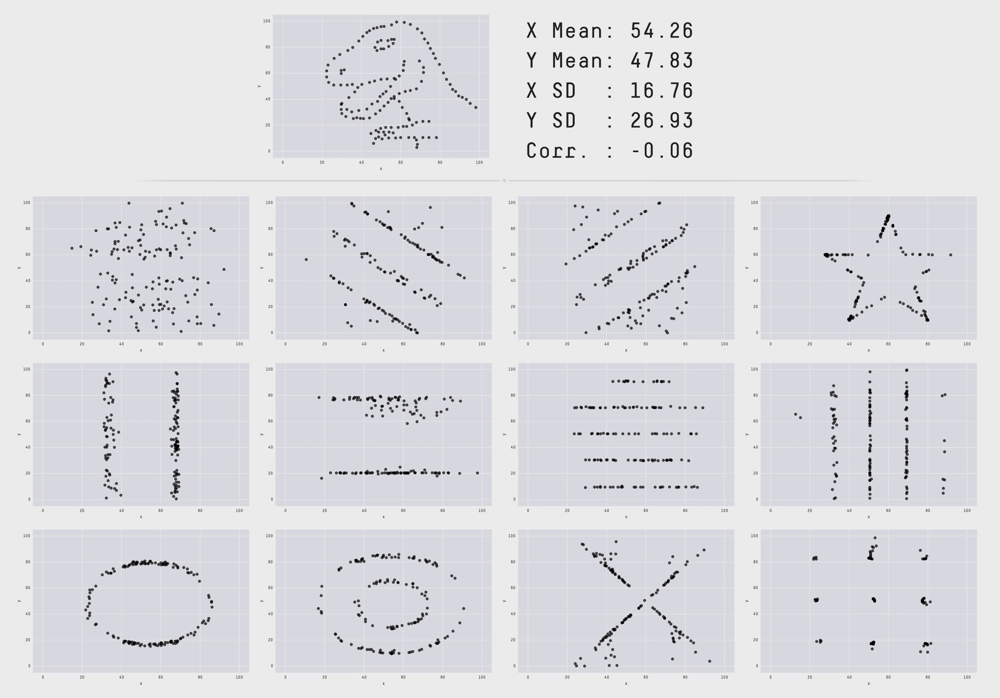

Plotting with ggplot2
RaukR 2024 • Advanced R for Bioinformatics
12-Jun-2024
Graphs
Graphing is an essential part of data analyses. Data with same summary statistics can look very different when plotted out.


R graphics


ggplot2 vs Base Graphics

Grammar Of Graphics


- Created by Hadley Wickham in 2005
- Data: Input data
- Geom: A geometry representing data. Points, Lines etc
- Aesthetic: Visual characteristics of the geometry. Size, Color, Shape etc
- Scale: How visual characteristics are converted to display values
- Statistics: Statistical transformations. Counts, Means etc
- Coordinates: Numeric system to determine position of geometry. Cartesian, Polar etc
- Facets: Split data into subsets
Building A Graph: Syntax

Building A Graph

Building A Graph

Building A Graph
Data • Format

Wide
| Sepal.Length | Sepal.Width | Petal.Length | Petal.Width | Species |
|---|---|---|---|---|
| 5.1 | 3.5 | 1.4 | 0.2 | setosa |
| 4.9 | 3.0 | 1.4 | 0.2 | setosa |
| 4.7 | 3.2 | 1.3 | 0.2 | setosa |
Long
| Species | variable | value |
|---|---|---|
| setosa | Sepal.Length | 5.1 |
| setosa | Sepal.Length | 4.9 |
| setosa | Sepal.Length | 4.7 |
Geoms

geoms
Stats
- Stats compute new variables from input data.

Stats
- Plots can be built with stats.

Aesthetics

Aesthetics

Multiple Geoms

Scales • Discrete Colors
- scales: position, color, fill, size, shape, alpha, linetype
- syntax:
scale_<aesthetic>_<type>

Scales • Continuous Colors
- In RStudio, type
scale_, then press TAB

Scales • Shape


Facets • facet_wrap
- Split to subplots based on variable(s), Faceting in one dimension


Facets • facet_grid

Coordinate Systems


Theming
- Modify non-data plot elements/appearance
- Axis labels, panel colors, legend appearance etc

Theme • Legend

Theme • Text
p <- p + theme(
axis.title=element_text(color="#e41a1c"),
axis.text=element_text(color="#377eb8"),
plot.title=element_text(color="#4daf4a"),
plot.subtitle=element_text(color="#984ea3"),
legend.text=element_text(color="#ff7f00"),
legend.title=element_text(color="#ffff33"),
strip.text=element_text(color="#a65628")
)
Theme • Reuse
newtheme <- theme_bw() + theme(
axis.ticks=element_blank(), panel.background=element_rect(fill="white"),
panel.grid.minor=element_blank(), panel.grid.major.x=element_blank(),
panel.grid.major.y=element_line(size=0.3,color="grey90"), panel.border=element_blank(),
legend.position="top", legend.justification="right"
)
Professional themes

Position

Combining Plots

Refer to patchwork documentation. Some notable alternatives are ggpubr and cowplot.
Learning & Help


Bonus


Bonus

Thank you! Questions?
_
platform x86_64-pc-linux-gnu
os linux-gnu
major 4
minor 3.2 2024 • SciLifeLab • NBIS • RaukR